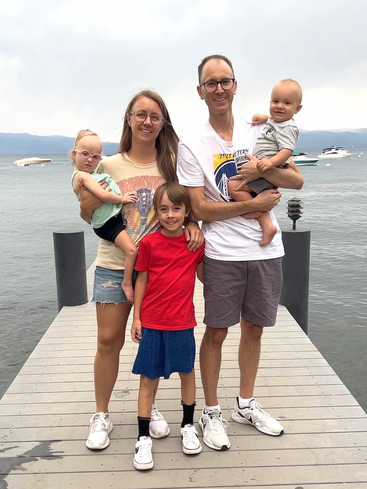
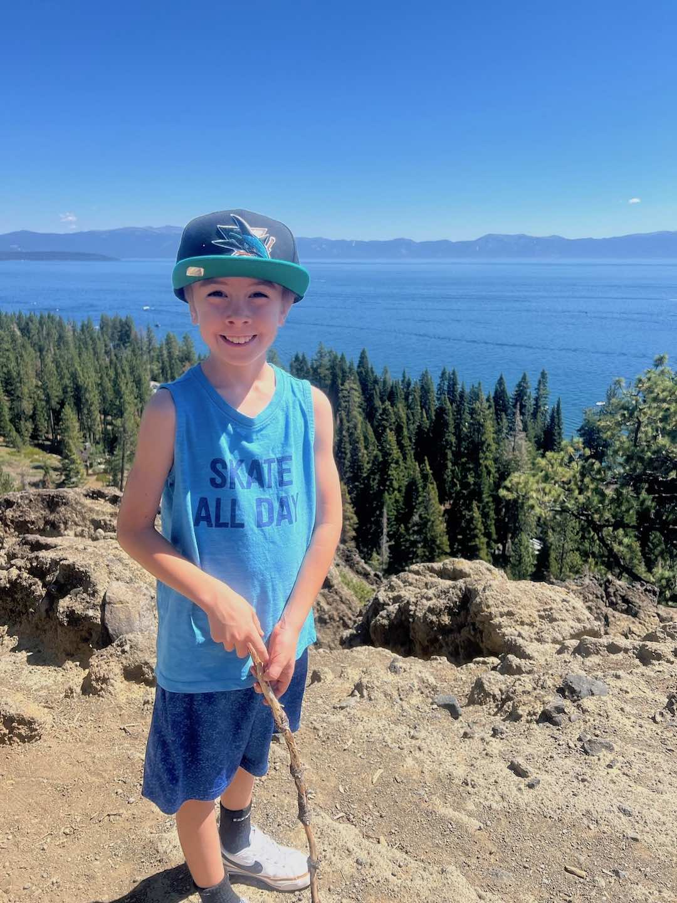
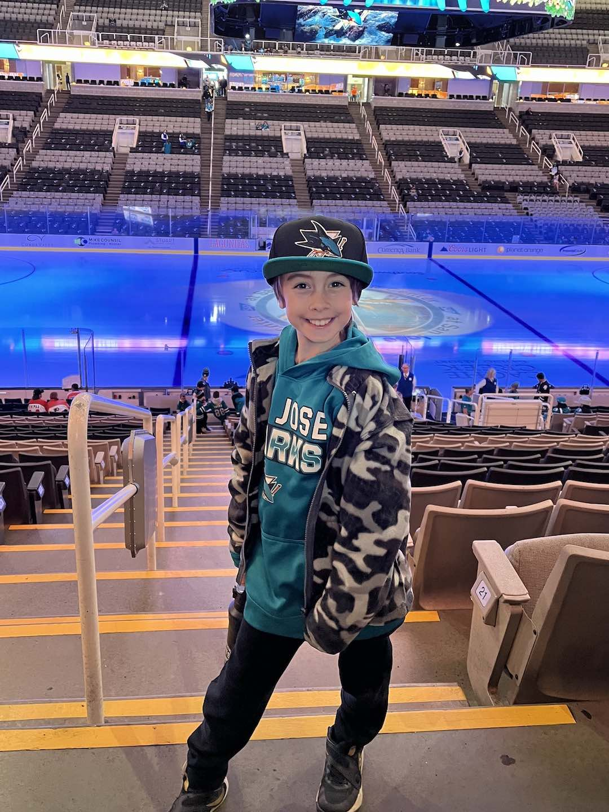
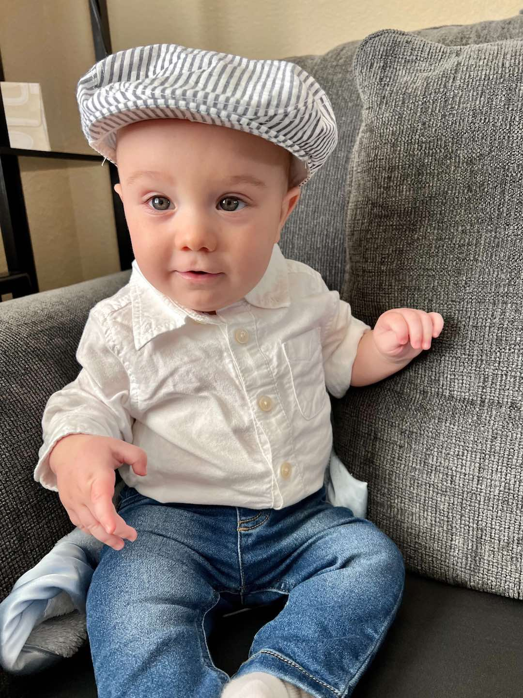

Year In Review
Highlights from our family's year included...The majority of 2023 was spent preparing for and welcoming a third child! Along with that came a renewed focus on health and wellness, concentrating on the foods we eat. Following a stricter animal based diet, we delight in items such as grass fed beef, pasture raised eggs, organic fruit and raw dairy while avoiding all seed oils. We've never felt better and have resilient immune systems.
In June, we once again spent a wonderful week of vacation at The Los Piños Del Mar, owned and operated by Greg's best friend Brian and his wife Anna. Along with enjoying the new billiard table and bonus room, the signature dining experience was a memorable highlight. We also ventured to Orange County one day to visit with Kendra's aunt and cousins at a favorite beach spot.
In August, we took Aaron on a special birthday adventure to Reno, NV. While there we visited the Fleischmann Planetarium on the University of Nevada, Reno campus and The Discovery children's museum which was by far the best we had ever set foot in. It included puzzle rooms, exhibits across numerous branches of science and engineering and housed a climbing apparatus that went from the floor to the 2nd story ceiling. The day ended with an excellent dinner and dessert at a local pizza establishment.
In other news, Greg went to a primary care physician for the first time in well over 20 years and received a completely clean bill of health. He celebrated his birthday this year attending a concert by country music hit-maker Clint Black. He has elevated his poker playing to new heights and enjoys battles with the other card sharps at the local casino frequently.
Kendra was elected to a director position in the parent/teacher association at school and specializes in event coordination and fundraising. In addition to expertly carrying and delivering a child this year, she continues to grow in her role as the caretaker of our family and supports us all every single day. There is no limit to the efforts she makes to enable everyone around her to thrive.
- 


Aaron
Aaron turned 7 on August 21st and was one of the select 2nd graders to be placed into the combination 2nd/3rd grade class at Sunset Ranch Elementary. At the most recent trimester assessments, his teacher remarked that he is a great friend and a sweet boy that always has a good attitude and is helpful to others and also loves technology. His academic interests include space and astronomy.In extra curriculars, Aaron achieved his yellow belt in Taekwando and also attended lacrosse and basketball camps. He's become a huge football fan and enjoys competing with his friends at school. He also independently learned to swim and ride his two-wheeled bike. He has successfully completed an ever-growing number of Lego projects and continues to enjoy playing card and board games.
Aaron attended another 49ers football game, a San Francisco Giants game as well as the Monster Jam truck event with his father. He also made his first visit to the cinema to see the Super Mario Brothers movie. He even took his first city bus ride, adding to the list of public transportation options he has experienced. He continues to enjoy community big truck events and various museum visits.
Aaron takes great pride in being an awesome big brother to both his siblings and has been an enormous help with his new little brother.


- 

- 

Kelsie
Kelsie turns 3 on December 28th, having endured another up and down year with Wolf-Hirschhorn syndrome. She continues to grow and develop at a slow pace with very limited mobility. We are working on ways to encourage her to put weight through her legs and use her hands more often. She has recently started sitting independently and loves being able to join us for meals at the dinner table.This past year Kelsie had successful strabismus surgery to help align her eyes and allow for better binocularity. She also transitioned to a high-fat, low-carb ketogenic diet to help battle the persistent daily seizures. When in Ketosis, we have seen a 25-50% reduction in seizure activity which has allowed her to enjoy her days a little more and make additional strides in her development.
Kelsie surprisingly expressed much displeasure over the new baby, but eventually embraced her role as an attentive big sister. She has even learned to cry and fuss when she wants attention, something she had never done before. Kelsie absolutely adores her older brother and can often be found intently observing his video games, cheering on a game of catch or playing the villain during block building.
In the new year, Kelsie will be preparing to head off to preschool in order to continue receiving therapy services. She will be getting a custom wheelchair and gait trainer to help make this possible. Her parents are very nervous about sending her out into the world.


Joseph
Joseph Nathaniel Robinson, nicknamed "Baby Joe" by his older brother very early in the pregnancy, was born on July 31st at 11:12 in the morning weighing in at 6 lbs 2 oz and measuring 19 inches long. Arriving a few weeks ahead of his scheduled due date, he required a brief 10 day stay in the NICU before being released on good behavior to join us at home.Joseph currently enjoys grabbing anything in close proximity and putting it in his mouth. He has recently attempted to sample real foods, but although he has enjoyed their fun flavors, he is not quite ready to eat them. He regularly eyeballs everyone's plate at dinner like a puppy waiting for scraps. We can already tell he's going to be quite the little foodie.
Joseph has been a source of much excitement for our family in just a few short months and he is really catching us off guard with how quickly he is growing and developing. He has a great big infectious smile and his laughter is a welcome change of pace from the demanding screams of his early days. Joseph has been the perfect addition to our family!
- 


Best wishes for a holiday filled with countless blessings,
Greg, Kendra, Aaron, Kelsie & Joseph
Greg, Kendra, Aaron, Kelsie & Joseph